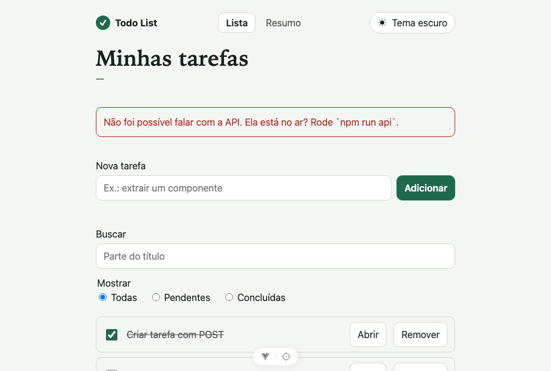

Agora a aplicação também escreve
Até aqui só GET. Concluir uma tarefa mudava a tela e sumia no F5, porque o servidor nunca ficou sabendo. Hoje entram POST, PATCH e DELETE — e, como o HTTP cresceu, ele sai do composable para uma camada só dele.
| Critério | Evidência |
|---|---|
| Escrita | Network: POST, PATCH e DELETE |
| Persistência | F5 mantém tudo; o db.json muda no disco |
| Modularização | Nenhuma linha de HTTP fora de services/ |
id: o navegador ou o servidor? E o que
deve ir para a lista na tela — o objeto que eu montei ou o que a resposta trouxe?
Três verbos e um lugar só para o HTTP
| Ação | Verbo | Endereço | O que volta |
|---|---|---|---|
| Criar | POST | /tarefas | A tarefa criada, com o id |
| Alterar | PATCH | /tarefas/:id | A tarefa alterada |
| Remover | DELETE | /tarefas/:id | Nada |
PATCH × PUT: o PATCH manda só o que mudou; o PUT substitui o registro inteiro. Mandar { concluida: true } com PUT apagaria o título.
const api = axios.create({ baseURL: API_URL, timeout: 8000 })
export async function criarTarefa(titulo) {
const { data } = await api.post('/tarefas', { titulo, concluida: false })
return data
}async function adicionar(titulo) {
salvando.value = true
try {
const criada = await criarTarefa(titulo) // volta COM o id
tarefas.value = [...tarefas.value, criada]
} catch (falha) {
erro.value = mensagemDeErro(falha, 'criar a tarefa')
} finally {
salvando.value = false
}
}services/ sabe de HTTP · composables/ sabe das tarefas · views/ sabe da tela. O componente não sabe que existe um servidor; o serviço não sabe que existe uma tela.
Os três verbos no Network — e o F5 que prova
GET /tarefas → 200 (carregamento)
POST /tarefas → 201 (criar)
PATCH /tarefas/LJCdP9Rh4Eo → 200 (concluir)
GET /tarefas → 200 (depois do F5)
DELETE /tarefas/LJCdP9Rh4Eo → 200 (remover)O id LJCdP9Rh4Eo foi gerado pelo servidor na resposta do POST.

4 tarefas → criar → 5 → concluir → “2 de 5 concluídas” → F5 → continua “2 de 5 concluídas”.

API fora do ar ao criar: a lista continua intacta e a mensagem aparece acima dela.
Abra o db.json no editor durante a demonstração: ele muda no disco a cada ação. É a prova mais concreta de que “salvou” quer dizer alguma coisa.
ObservePor que a falha de uma ação não apaga a lista, mas a falha do carregamento mostra só a mensagem?
Prática: a camada de serviço e as três ações
- Ponto de partida
- A sua cópia da etapa 19. A pasta da etapa 20 já traz a solução.
- 1
src/services/tarefasApi.js: instância do axios elistarTarefas,criarTarefa,alterarTarefa,apagarTarefa.- 2
- Mova
mensagemDeErropara o serviço — é conhecimento sobre HTTP. - 3
- No composable, as três ações viram
async, com o mesmo desenho: pedir → esperar → atualizar com o que voltou. - 4
- Prop
salvandonoTarefaForm, desabilitando o botão. - Evidência
- As três ações sobrevivem ao F5; nenhum
import axiosfora deservices/.
Dica 1
Não mande id no POST. Quem gera é o servidor — e é o objeto devolvido que vai para a lista.
Dica 2
const { data } = await api.post(...) já desembrulha a resposta.
Mostrar solução (após a tentativa)
export async function alterarTarefa(id, mudancas) {
const { data } = await api.patch(`/tarefas/${id}`, mudancas)
return data
}async function alternar(id) {
const atual = tarefas.value.find((t) => String(t.id) === String(id))
if (!atual) return
const alterada = await alterarTarefa(id, { concluida: !atual.concluida })
tarefas.value = tarefas.value.map((t) =>
String(t.id) === String(id) ? alterada : t)
}Esperar a resposta × fingir que deu certo
| Esperar (o nosso) | Otimista | |
|---|---|---|
| Quando a tela muda | Depois da resposta | Na hora do clique |
| Sensação | Um instante de espera | Instantânea |
| Se falhar | Nada mudou; só a mensagem | Precisa desfazer o que mostrou |
| Código | Simples | Guarda o estado anterior para reverter |
A regra do curso: a tela nunca mostra o que o servidor não confirmou. É mais honesto, e é mais simples — duas razões que costumam andar juntas.
Quando a atualização otimista compensa:
- A ação quase nunca falha (marcar uma caixa, curtir uma publicação).
- A espera é percebida e incomoda — listas longas, uso no celular.
- Dá para mostrar o estado intermediário com honestidade (“enviando…”, como num aplicativo de mensagens).
O que não se faz: mostrar como concluído e, se falhar, deixar assim mesmo. Aí a tela mente — e é o defeito que a Unidade 6 inteira combate.
Investigação: o clique duplo
Tire a prop salvando do botão, ligue Slow 3G e clique duas vezes rápido em Adicionar.
POST /tarefas → 201
POST /tarefas → 201 ← a mesma tarefa, de novoE a validação de título repetido não impede: no instante do segundo clique, a primeira tarefa ainda não voltou — ela não está na lista para ser comparada.
Dica
O problema não é a validação: é a janela de tempo em que a aplicação aceita um segundo pedido antes de o primeiro terminar.
Mostrar a correção
const salvando = ref(false)
// no composable: salvando.value = true antes, false no finally
// no template:
<button :disabled="salvando">
{{ salvando ? 'Salvando…' : 'Adicionar' }}
</button>Desabilitar comunica e impede. O texto que muda explica por que o botão não responde.
É o mesmo defeito que gera duas compras quando alguém clica duas vezes em “Finalizar pedido”. Em sistemas sérios há uma segunda linha de defesa no servidor (chave de idempotência) — porque o frontend não protege nada, como vocês já sabem desde a etapa 11.
Pesquisar: revisar a camada de serviço
Revise esta camada de serviço de uma aplicação Vue 3 + axios.
[cole src/services/tarefasApi.js]
Avalie, citando a documentação do axios quando aplicável:
1. o que está bem resolvido e NÃO precisa mudar;
2. o que eu ganharia com um interceptor;
3. se faz sentido usar PUT em vez de PATCH aqui.
Critério: depois de qualquer mudança, criar, concluir e remover
precisam continuar sobrevivendo ao F5. Não troque de biblioteca.| A resposta deve dizer | Sinal de resposta ruim |
|---|---|
Reconhecer o que já está certo (instância, async/await, erro traduzido) | Reescreve tudo sem apontar um defeito |
| Interceptor: lugar único para token e erro comum | Propõe interceptor “porque é boa prática”, sem dizer para quê |
PATCH é o certo aqui; PUT apagaria campos | Diz que são equivalentes |
| Citar páginas que existem | Links inventados |
Onde conferir
Reparem no item 1: pedir o que não mudar é o teste de honestidade da etapa 11, agora aplicado a código.
Verificação sem IA · fecho da Unidade 6
- Por que a tarefa criada só entra na lista depois da resposta?
- Qual a diferença entre
PATCHePUTneste caso? - Por que nenhuma view importa o
axios?
O que a Unidade 6 deixou pronto
- Dados vindos de uma API, com os quatro estados tratados
- CRUD completo, persistido no servidor
- HTTP isolado numa camada só dele
O que vem a seguir
O estado continua num módulo solto, que qualquer arquivo pode importar e alterar. Na Unidade 7 ele vira uma store do Pinia: o mesmo estado compartilhado, com um lugar só para mudá-lo e uma ferramenta que mostra o histórico das mudanças.